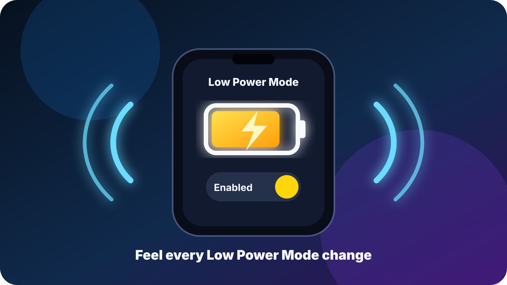
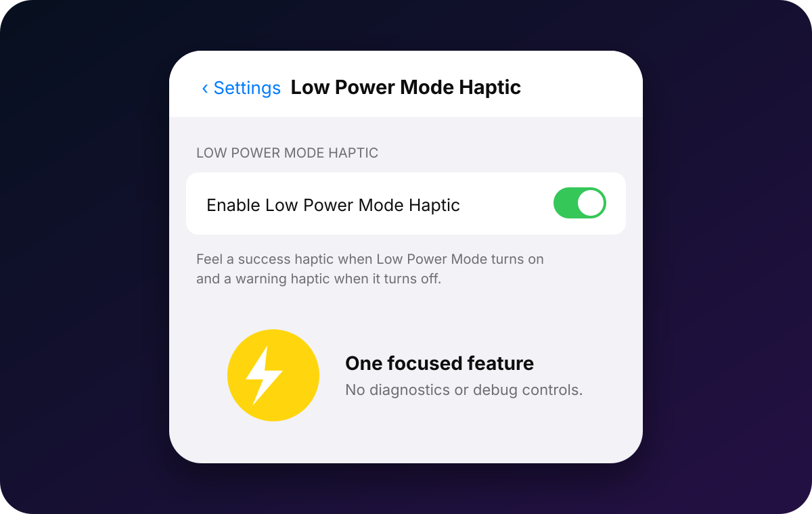

Mode turned on
A success-style haptic confirms that Low Power Mode is now active.
Feel a success haptic when Low Power Mode turns on and a warning haptic when it turns off—without adding extra controls or modifying battery settings.
Build-validated and awaiting physical-device confirmation. The tutorial is prepared but will not be published until the RootHide build and Settings pane are confirmed on the target device.

Stock iOS shows that Low Power Mode changed, but it does not give a dedicated haptic confirmation. This tweak adds only that missing feedback.
A success-style haptic confirms that Low Power Mode is now active.
A warning-style haptic confirms that normal power mode has returned.
Initial loading and repeated notifications without a real state change are rejected.
Settings contains one real control: Enable Low Power Mode Haptic. There are no diagnostics, test buttons or private runtime details.

Install only the package that matches your jailbreak environment.
For RootHide on the target iPhone 14 Pro Max running iOS 16.0.
Download RootHide .debFor standard rootless jailbreak environments using the arm64 package architecture.
Download rootless .debDo not install both variants. Add https://nextsolution.cc/ to Sileo, refresh sources and install the matching build.
The tweak injects only into SpringBoard, listens to Apple’s documented power-state notification, compares the previous and current state, and uses UIKit’s standard feedback generator. It does not change Low Power Mode, battery thresholds, charging behavior or private user data.
No. It only confirms genuine on/off changes with haptic feedback.
Yes. The primary target is iOS 16.0, with an iOS 15 minimum target. Final runtime confirmation is still required on the user’s RootHide device.
The website approval gate requires physical-device confirmation before this tutorial branch can be merged.